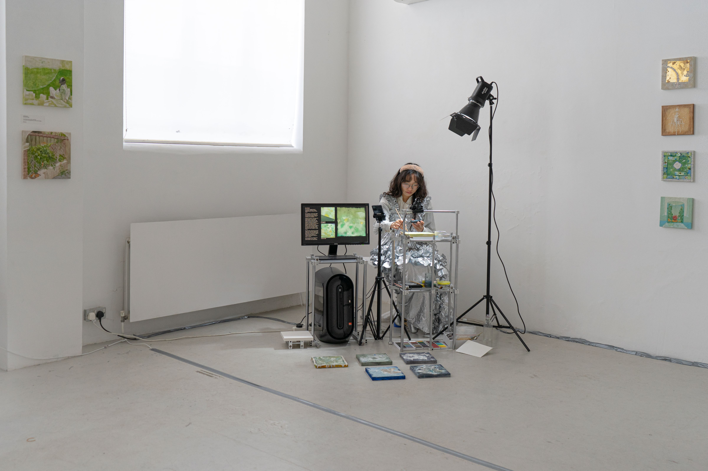

Throughout the exhibition, the artist Huichuan continuously paints using mineral pigments (iwaenogu)—a medium rooted in traditional East Asian mural painting, far removed from industrial production and digital technology. The materials are deliberately simple and primitive; even the painting boards and pigments are handcrafted and mixed by the artist. Meanwhile, a camera captures the painting in progress in real-time, periodically transmitting the current image to an AI model trained on hundreds of her own paintings and sketches. The model then generates new images displayed on screen, which the artist uses as reference to continue creation. This process forms a purely visual, non-textual feedback loop: human gestures transform into AI interpretation, and AI's understanding becomes human inspiration.
However, this exchange is fundamentally asymmetric. While the creative process involves both human and machine, the artist retains ultimate agency—the freedom to deviate from, ignore, or radically reinterpret what the AI suggests. The human hand maintains veto power over the cycle, ensuring that this remains a collaboration rather than an automation. The AI proposes; the artist disposes. As the artist paints, the AI generates images in real-time, each frame influenced by both the current painting and the AI's own previous outputs, creating a "self-reflective" AI collaborator that serves as both mirror and co-creator. Completed paintings are displayed on the floor and walls surrounding the artist, witnessing this ongoing dialogue.
In this open-ended feedback loop, the artist can always continue painting and the AI can always generate new responses. There is no natural stopping point—completion becomes a choice rather than a destination. These works are therefore valued not by their finality, but by the time invested in their creation, each painting priced by the hours of human-AI dialogue. In mathematics, an asymptote approaches its limit infinitely without ever meeting it. This work embodies the same principle—a human-AI collaboration forever approaching completion, forever in the process of becoming.